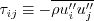

Next:
About this document ...
(1)
(2)
(3)
(4)
(5)
(6)

(7)
(8)
(9)
(10)
(11)
(12)
(13)
(14)
(15)
(16)
(17)
(18)
(19)
(20)
(21)
(22)
(23)
(24)
(25)
(26)
(27)
(28)
About this document ...
Next:
About this document ...
Christopher Rumsey 2017-01-10